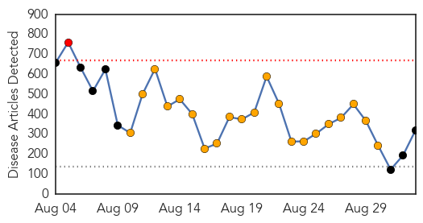
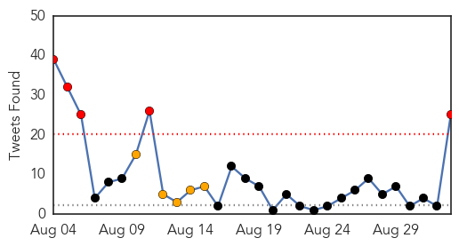
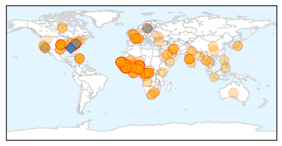
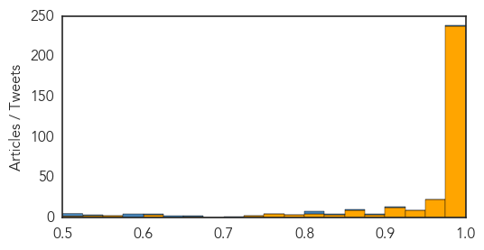

Ebola
30-Day Web Trend
1 alerts, 21 warnings

30-Day Twitter Trend
5 alerts, 5 warnings

Article Locations
Article Confidences
Top Articles:
- 1.000
- Man infected with Ebola virus flees isolation, terrifies market
- 1.000
- Another U.S. doctor in Liberia tests positive for Ebola
- 1.000
- Liberian doctors strike, food prices spike as West Africa struggles to contain Ebola outbreak
- 1.000
- Ebola: health fears stop British journalist from hosting awards
- 1.000
- Ebola outbreak: call to send in military to west Africa to help curb epidemic
- 1.000
- Ebola: Response Based on ‘Scientific Evidence, Not on Fear'
- 1.000
- West Africa struggles to contain Ebola as warnings and deaths mount
- 1.000
- UPDATE 1-Liberian doctors strike, food prices spike as West Africa struggles to contain Ebola outbreak
- 1.000
- WRAPUP 1-West Africa struggles to contain Ebola as warnings and deaths mount
- 1.000
- TIMELINE-World's worst Ebola outbreak tests global response
- 1.000
- Ebola crisis: Charity Doctors with Borders warns world is 'losing the battle'
- 1.000
- MUSC, DHEC doctors brief lawmakers on Ebola protocol
- 1.000
- Ebola a global responsibility
- 1.000
- More Global Help Needed to Fight Ebola Outbreak
- 1.000
- ‘We are losing the battle against ebola’
- 1.000
- ‘We are losing the battle against ebola’
- 1.000
- How limiting travel could worsen Ebola
- 1.000
- Grisly reality of Ebola epidemic
- 1.000
- CDC raises Ebola alarm as another American doctor infected, iden
- 1.000
- World 'losing battle' to contain Ebola: MSF
- 1.000
- Travel restrictions could worsen Ebola crisis
- 1.000
- Dramatic moment desperate Ebola escapee dragged back into quarantine truck
- 1.000
- Ebola response must be based on 'scientific evidence, not on fear,' urge top UN officials
- 1.000
- Ebola response must be based on 'scientific evidence, not on fear,' urge top UN officials
- 1.000
- Ebola response ‘inadequate’ - Africa
- 1.000
- Liberian doctors strike, food prices spike as West Africa struggles against Ebola outbreak
- 1.000
- Swedish Patient Tests Negative
- 1.000
- 'Many Are Dying Needlessly'
- 1.000
- Ebola outbreak reaches Senegal, riots break out in Guinea
- 1.000
- Poor response to Ebola causing needless deaths, World Bank head says
- 1.000
- Ebola outbreak 'out of control,' says CDC director
- 1.000
- Ebola outbreak: 'We need action now,' says CDC director Tom Frieden
- 1.000
- Ebola outbreak: Senegal monitors contacts of 1st patient
- 1.000
- UN Food Shortages a Grave Concern in Ebola-hit Nations
- 1.000
- Liberia Ebola healthcare workers strike
- 1.000
- CDC director raises Ebola alarm; another American doctor infected
- 1.000
- Liberia’s nurses go on strike amid Ebola outbreak — RT News
- 1.000
- Critical Supplies Reaching Health Workers Fighting Ebola Outbreak - Liberia
- 1.000
- Ebola: Liberian doctors strike, food costs spike
- 1.000
- Here's Why Africa's Ebola Epidemic Is Officially 'Spiraling Out of Control'
- 1.000
- World 'losing battle' to contain Ebola, says MSF
- 1.000
- West Africa struggles to contain Ebola as warnings and deaths mount
- 1.000
- CDC Raises Alarms; U.S. Doctor In Liberia Tests Positive For Ebola
- 1.000
- U.S. official: Ebola outbreak is “spiraling out of control”
- 1.000
- Liberian nurses go on strike
- 1.000
- Ebola Virus Is Threatening the World’s Safety
- 1.000
- West Africa struggles to contain Ebola as warnings and deaths mount
- 1.000
- Should Bangalore worry about Ebola?: Nikita Malusare
- 1.000
- 'Grave concerns' over food shortages in Ebola-hit nations: UN
- 1.000
- TIMELINE-World's worst Ebola outbreak tests global response
Showing top 50 articles...
Top Tweets:
- 0.992
- .@DrFriedenCDC: Challenge of Ebola epidemic number of cases so large we now need more faster longer to stop Ebola.
- 0.988
- RT: Ebola virus in DRC is Zaire strain in a lineage most closely related to a virus from the 1995 Ebola outbreak in Kikwit also in…
- 0.909
- .@DrFriedenCDC: Privilege to see CDC disease detectives in W. Africa to help get Ebola under control.
- 0.904
- .@DrFriedenCDC: Longer Ebola spreads higher theoretical risk that virus might mutate.
- 0.896
- .@DrFriedenCDC Nothing suggests Ebola virus spreading in W. Africa differently than in previous outbreaks.
- 0.875
- Estimating the Reproduction Number of Ebola Virus (EBOV) During the 2014 Outbreak in West Africa http://t.co/EkGFcV9Wl8
- 0.832
- .@DrFriedenCDC: CDC staff working 7 days a week under very difficult conditions to help get Ebola outbreak under control. We'll stay at it.
- 0.819
- Ebola pandemic numbers as of 28 August endebolanow ebola westafrica sierraleone guinea liberia nigeria http://t.co/vqjzi1gakF
- 0.817
- RT: Virus sequencing confirms DRC Ebola outbreak unrelated to W African outbreak http://t.co/FKKdEEx5zV
- 0.814
- RT: The Ebola outbreak in DRC is a distinct and independent event with no relationship to the outbreak in West Africa http://t.co/e…
- 0.809
- .@DrFriedenCDC: World Ebola expert comment: What has worked to stop every Ebola outbreak will work here if scaled up quickly.
- 0.724
- I was deeply moved & impressed by the wonderful work CDC staff are doing in each country to respond to Ebola outbreak.
- 0.651
- .@DrFriedenCDC: 2-year old survivor a symbol of hope seeing more survivors. Individuals can survive Ebola. Nothing mysterious about Ebola.
- 0.642
- CDC warns Ebola epidemic in West Africa is outpacing current response. Read new press release: http://t.co/0rf8DrMzaa
- 0.637
- HCW without protection keep getting infected w/Ebola in health facilities. What does it mean for safety of other patients? Nosocomial
- 0.616
- .@DrFriedenCDC: Need country-specific help to stop Ebola: emergency ops centers treatment beds. Needs change quickly by country.
- 0.613
- RT: CDC warns Ebola epidemic in West Africa is outpacing current response. Read new press release: http://t.co/0rf8DrMzaa
- 0.594
- .@DrFriedenCDC: Seeing Ebola outbreak firsthand is just different. It's not like the data we collect at CDC.
- 0.582
- RT: Excited to see my analysis of the Ebola virus outbreak published http://t.co/incaozDFfI
- 0.580
- RT: Just returned from W. Africa & am deeply alarmed by sharp acceleration of Ebola spread. It is a crisis & urgent action …
- 0.576
- .@DrFriedenCDC: US govt helping with resources & aid to support Ebola response.
- 0.536
- Just returned from W. Africa & am deeply alarmed by sharp acceleration of Ebola spread. It is a crisis & urgent action is needed.
- 0.522
- RT: International spreading risk of the ebola outbreak: @PLOSCurrentsOut paper by our officemates at lab http://t.co…
- 0.516
- RT: "This is the third U.S. aid worker to be infected with Ebola in this current outbreak in West Africa. " http://t.co/ecV26k1pSY
- 0.508
- .@DrFriedenCDC: CDC labs will sequence Ebola virus genome over time using advanced molecular detection methods: http://t.co/gcCCigibEj
Unknown
30-Day Web Trend
1 alerts, 0 warnings

30-Day Twitter Trend
4 alerts, 0 warnings

Article Locations

Article Confidences

Top Articles:
- 0.959
- American Ebola, vaccine trials
- 0.936
- Health unit confirms active case of tuberculosis in Orangeville
- 0.917
- Chicago Tribune
- 0.910
- The world windows to Thailand
- 0.871
- Malaria Bounces Back as Anopheles Mosquito Resurfaces
- 0.866
- Securing release of Americans held in N. Korea a top priority -White House
- 0.866
- Somalia's President Mohamud arrives to attend the Africa Union Peace and Security Council Summit on Terrorism in Nairobi
- 0.866
- A padlock and a condom are seen around cables along the bridge of the Americas in La Paz
- 0.866
- Tropical Storm Dolly continues toward Mexico-NHC
- 0.866
- Saudi pipeline set alight after shots fired at security patrol-source
- 0.866
- An activist for the rights of women holds a banner during a protest rally in La Paz
- 0.857
- Choosing the flu vaccine that's right for you - KLTV.com-Tyler, Longview, Jacksonville, Texas
- 0.856
- Sudan Vision Daily
- 0.844
- Nurse practitioner receives award for HPV research
- 0.843
- Visitors under age 12 to Blessing Hospital restricted until further notice
- 0.838
- TB testing involving Moncton student encouraging, health officer says
- 0.755
- Free flu vaccines for 60,000 Oakland kids
- 0.731
- India to Eradicate Kala-azar by 2015: Harshvardhan
- 0.713
- Mississippi: Canton schools report scabies outbreak, 15 cases reported
- 0.704
- KWSB held responsible for naegleria fowleri existence
- 0.677
- Parkinson’s Disease support group to meet Sept. 10
- 0.673
- DA probe shows water ‘dangerously’ polluted
- 0.648
- Libyan health care on life support
- 0.630
- Cancer drive at schools - Gauteng
- 0.609
- Bobcat that attacked Connecticut woman tests rabies positive
- 0.572
- Pig breeders warned over virus
- 0.564
- Global snapshot of infectious canine cancer shows how to control the disease
- 0.563
- Observer
- 0.547
- Obama orders 350 more US troops to Baghdad
- 0.547
- IS video purports to show beheading of second US journalist
- 0.547
- Video: Bodies ‘left behind’ as Ukraine forces flee rebel assault
- 0.547
- US military targets Somalia's al Shabaab Islamist group
- 0.547
- Several UN peacekeepers killed in Mali explosion
- 0.547
- NATO plans new 'spearhead' force to counter Russia
- 0.547
- France vows crackdown on unemployment benefit ‘abusers’
- 0.547
- Trust and 'bio-disaster units' needed to fight Ebola
- 0.547
- Britain drops arrest warrant for ill boy’s parents
- 0.547
- Boko Haram Islamists seize northeast Nigerian town
- 0.547
- Arab media strike back at IS Islamists – with cartoons
- 0.540
- Ban on Pig Imports from Virus-Hit Countries Must Be Upheld
- 0.536
- Bangladesh floods test disaster response improvements - Bangladesh
Top Tweets:
-
No tweets found for Sep 02, 2014